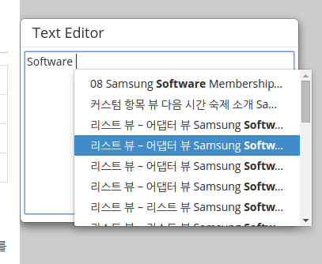
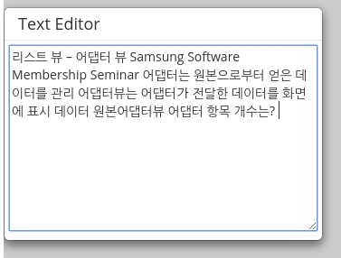

Hello there!
My name is Joel. We are a group of students from the National University of Singapore enrolled in course module CS4249 Phenomena and Theories of Human-Computer Interaction. Thank you for your time.
In this study, we will compare the performance of a new Copy-Paste technique known as AutoComPaste, against the traditional Copy-Paste, in the Korean language and Konglish.
AutoComPaste is a system that intelligently stores all sentences that you have read, and copying and pasting is as simple as typing into the system:
Before
After
We need your help in testing the system. Let’s begin!
Note: Your participation in this study implies your agreement to our letter of consent, downloadable here.
오신 것을 환영합니다!!
우리는 싱가포르 국립 대학에서 학생들의 그룹 CS4249 코스 현상과 HCI 이론에 등록됩니다.
본 연구는 한국어와 영어로 기존의 복사 - 붙여 넣기, 새로운 복사 - 붙여 넣기 기술 (AutoComPaste를) 비교합니다.
AutoComPaste 지능적으로 모든 문장을 읽고 저장합니다. 그리고 복사 및 붙여 넣기가 시스템에 입력하는 것과 같이 간단하다 .
시작하자!
참고 :이 연구에 참여는 여기에 동의서 다운로드를 동의
Note: Korean translation adapted from Google Translate. Corpora from Slideshare.